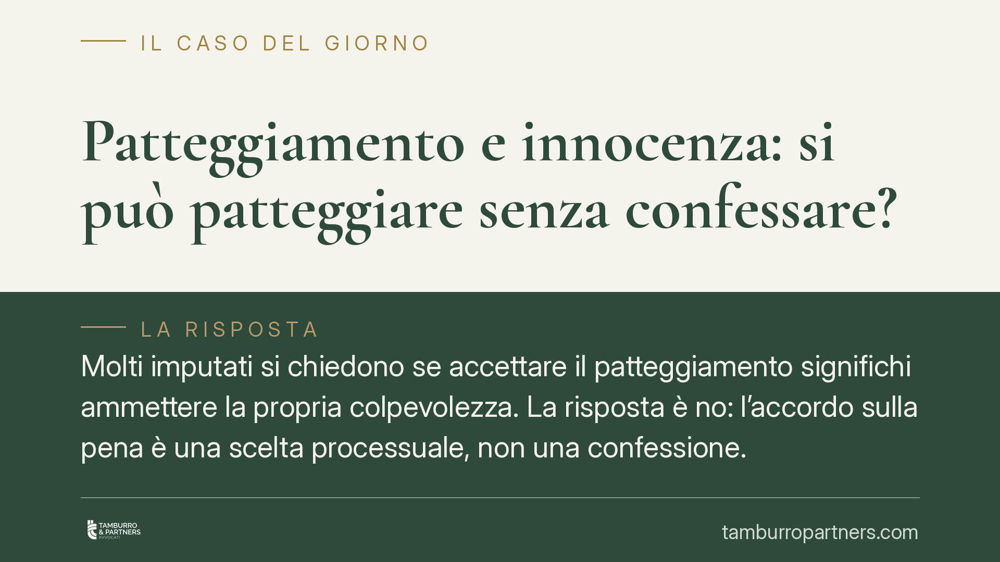

Patteggiamento e innocenza: si può patteggiare senza confessare?
Molti imputati si chiedono se accettare il patteggiamento significhi ammettere la propria colpevolezza. La risposta è no: l'accordo sulla pena è una scelta processuale, non una confessione. Comprendere questa distinzione è decisivo, perché la sentenza di patteggiamento ha effetti limitati e non fa stato nei giudizi civili, amministrativi e disciplinari.

Il fatto: patteggiare non significa confessare
Una delle convinzioni più diffuse, e più fuorvianti, riguarda il patteggiamento: si crede che accettarlo equivalga a dichiararsi colpevoli. Non è così.
Il patteggiamento — tecnicamente "applicazione della pena su richiesta delle parti" — è un accordo tra imputato e pubblico ministero sulla misura della pena, che il giudice recepisce con sentenza. È una scelta di strategia difensiva, non una dichiarazione di responsabilità. L'imputato può ritenersi innocente e, ciononostante, valutare che l'accordo riduca in modo apprezzabile il rischio processuale.
Inquadramento normativo
La disciplina è contenuta negli articoli 444 e seguenti del codice di procedura penale.
L'art. 444, comma 1, c.p.p. consente alle parti di chiedere l'applicazione di una pena ridotta fino a un terzo. Il patteggiamento è ammesso fino a una pena di due anni (cosiddetto patteggiamento "ordinario") e, nella forma "allargata", fino a cinque anni di pena detentiva, sola o congiunta a pena pecuniaria, con esclusione di alcuni reati di particolare gravità.
L'art. 444, comma 2, c.p.p. impone al giudice un controllo di merito: deve verificare la corretta qualificazione giuridica del fatto, la congruità della pena e — punto centrale — l'insussistenza delle cause di proscioglimento previste dall'art. 129 c.p.p. Se dagli atti emerge che il fatto non sussiste, che l'imputato non lo ha commesso, che il fatto non costituisce reato o non è previsto dalla legge come reato, il giudice non può ratificare l'accordo: deve prosciogliere. È qui che si coglie la distanza dalla confessione: il patteggiamento non sottrae il caso al vaglio giudiziale sull'evidenza dell'innocenza.
Gli effetti della sentenza sono regolati dall'art. 445 c.p.p. Due profili meritano attenzione. Primo: la sentenza di patteggiamento non fa stato nei giudizi civili, amministrativi e disciplinari (art. 445, comma 1-bis, c.p.p.). Chi è danneggiato dovrà quindi provare autonomamente la propria pretesa nella sede civile: la sentenza penale non gli offre un accertamento già confezionato. Secondo: quando la pena non supera i due anni, la sentenza non comporta l'applicazione di pene accessorie né di misure di sicurezza (salvo la confisca), ed è compatibile con la sospensione condizionale della pena.
Implicazioni pratiche
Per l'imputato, la scelta va misurata sul rischio concreto. Un processo ordinario può concludersi con l'assoluzione, ma può anche portare a una condanna più severa e a costi — economici ed emotivi — significativamente maggiori.
Il patteggiamento offre una pena ridotta, tempi rapidi ed effetti extra-penali contenuti. Non è un'ammissione spendibile contro l'imputato in altre sedi. Chi si professa innocente, ma valuta prove a proprio carico non trascurabili, può quindi considerarlo senza "confessare" alcunché.
Attenzione però: la sentenza resta iscritta nel casellario giudiziale (con eccezioni per le pene più lievi e con possibilità di estinzione decorsi i termini di legge). Va inoltre valutato l'impatto su eventuali procedimenti disciplinari, professionali o amministrativi collegati, anche se — come detto — non vi è automatismo probatorio.
Cosa fare in concreto
- Valutate il rischio processuale con il difensore. Confrontate lo scenario di un'assoluzione, di una condanna ordinaria e del patteggiamento, quantificando pena, tempi e costi di ciascuno.
- Verificate la soglia di pena applicabile. Accertate se il caso rientra nel tetto dei due anni (rilevante per pene accessorie e sospensione condizionale) o in quello dei cinque anni del patteggiamento allargato.
- Controllate le cause di proscioglimento ex art. 129 c.p.p. Se l'innocenza è evidente dagli atti, il proscioglimento è dovuto: in tal caso il patteggiamento può non essere la via migliore.
- Analizzate le ricadute extra-penali. Verificate gli effetti su procedimenti disciplinari, autorizzazioni, appalti o rapporti di lavoro, ricordando che la sentenza non fa stato nel civile e nell'amministrativo.
- Decidete solo dopo la disamina completa degli atti. Un accordo va valutato sulle prove concrete, non sull'ansia del momento.
Conclusione
Patteggiare non è confessare. È una scelta processuale che l'ordinamento circonda di garanzie, a partire dal controllo del giudice sull'innocenza evidente. Proprio perché incide su pena, casellario ed effetti collaterali, va ponderata caso per caso, con un'analisi tecnica accurata.
---
*Contributo informativo a cura di Tamburro & Partners Avvocati - Avv. Giuseppe Tamburro. Non costituisce parere legale.*
Ogni condominio ha una storia a sé.
Se gestisci un'amministrazione e vuoi un confronto su una specifica questione condominiale, scrivi allo studio. Ti rispondiamo entro un giorno lavorativo.